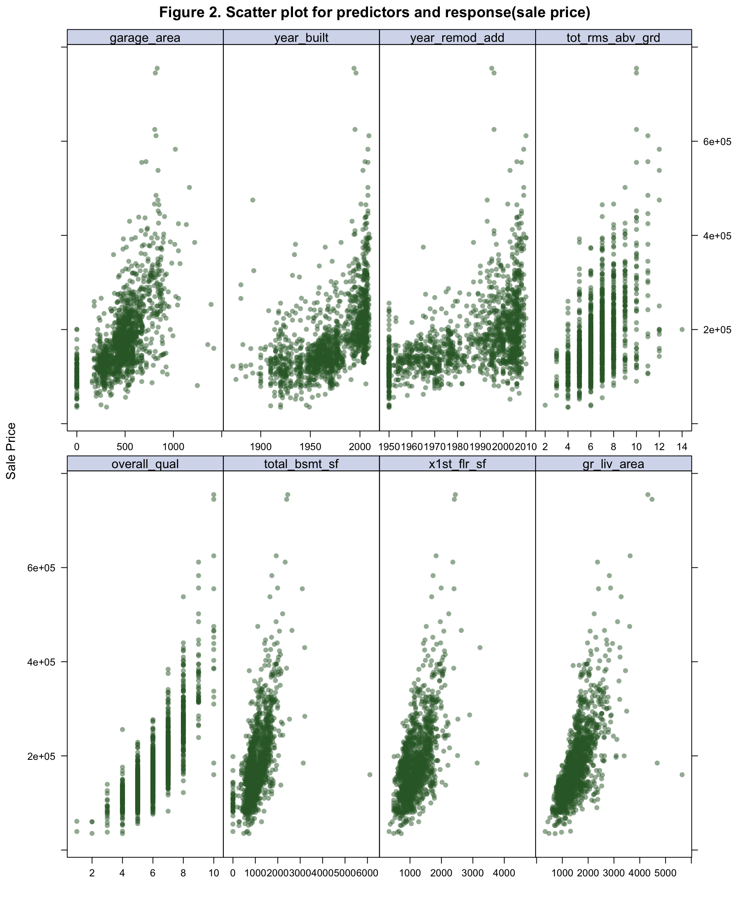

house_train_na = read_csv("data/train.csv") %>%
janitor::clean_names() %>%
mutate_if(is.character,as.factor) With 79 explanatory variables describing almost every aspect of residential homes in Ames, Iowa, this project would like to find an optimal regression model to predict the final sale price of each home. There are total 1460 observations,41 categorical variables and 38 numeric variables in the dataset. The variables are mainly evaluating the space of different areas, the quality or material of the building and the location of the house. Detail description can be found in the Appendix.
## check missing value number and percentage
na = house_train_na %>%
select_if(function(x) any(is.na(x))) %>%
summarise_each(funs(sum(is.na(.)))) %>%
pivot_longer(everything(),
names_to = "variable",
values_to = "na_total") %>%
mutate(na_per = na_total/nrow(house_train_na)) %>%
dplyr::select(variable, everything()) %>%
arrange(desc(na_per))
table1 = na %>% knitr::kable(caption = "Table 1. Missing data in each varaible with total count and percentage",
col.names = c("Variable", "NA Total", "NA(%)"))
## Deleting varibales:
### id not useful for prediction
house_train = house_train_na %>%
dplyr::select(-id)
### variables too many missing values
house_train = house_train %>%
dplyr::select(-c(na$variable[-19]))
## Deleting observation(electrical = 1)
house_train = house_train %>%
na.omit()Since some of the variables consists a lot of missing data, the prevalence of the missing data in each variable is investigated to decide whether removing the corresponding observation or removing the corresponding variable (Table 1). In order to remain the sample size, when more than 15% of the data is missing, the corresponding variable is pretended never existed. For the variables related to garage and basement, the most important information can be explained by garage_cars, total_bsmt_sf. Masonry veneer seems to be not essential when people consider buying a house. Therefore, the vaiables related to garage, basement and masonry are also deleted. The corresponding observation of the missing value in electrical is deleted.
## numeric
numeric = house_train %>%
select_if(is.numeric) %>%
select(sort(names(.)))
plot1 = numeric %>%
pivot_longer(everything(),
names_to = "varible") %>%
ggplot(aes(value)) +
facet_wrap(~ varible, scales = "free") +
geom_histogram()
## ordinal
chart = house_train %>%
select_if(is.factor) %>%
select(sort(names(.)))
chat_sum = chart %>% summary()
house_train = house_train %>%
mutate(mo_sold = as.factor(mo_sold),
yr_sold = as.factor(yr_sold),
ms_sub_class = as.factor(ms_sub_class),
central_air = as.numeric(central_air),
exter_cond = as.numeric(exter_cond),
exter_qual = as.numeric(exter_qual),
heating_qc = as.numeric(heating_qc),
kitchen_qual = as.numeric(kitchen_qual),
land_slope = as.numeric(land_slope),
lot_shape = as.numeric(lot_shape),
utilities = as.numeric(utilities),
paved_drive = as.numeric(paved_drive),
street = as.numeric(street))All character variables are converted into factor variable at the beginning. However, some numeric variables such as mo_sold, ms_sub_class, yr_sold should be converted to factor variables since they are nominal data not ordinal data. Some factor variables such as central_air, exter_cond, exter_qual, heating_qc, kitchen_qual, land_slope, lot_shape, paved_drive, street, utilities, can be converted to numeric variables since they are ordinal data.
nz_var = house_train %>%
nearZeroVar(names = TRUE, freqCut = 90/10)
house_train = house_train %>%
select(-c(nz_var))Actually, some predictors have a single value for the vast majority of the dataset, and this may cause near zero variance in the model fitting. If the ratio of the frequency of the most common value to the frequency of the second most common value in the variable is larger than 9, this variable will be removed.
At this point, all variables are complete (No NAs), all predictors are correctly converted to factor variables or numeric variables and near zero variance variables are removed. There are 38 variables including 11 factor variables and 27 numeric variables in the final dataset.
plot2 = house_train %>%
select_if(is.numeric) %>%
cor() From the correlation matrix plot(Figure 1), overall_qual (0.8), gr_liv_area (0.7) are highly correalted with sale_price. total_bsmt_sf, x1st_flr_sf, garage_area, full_bath, garage_cars, exter_qual, kitchen_qual are also correlated with sale_price(\(\pm 0.6\)). This implies that people concern overall quality of the house, living area space, basement size, garage size, kitchen quality and bathroom more when they buy the house.
# matrix of predictors
x = model.matrix(sale_price ~ overall_qual + total_bsmt_sf +
x1st_flr_sf + gr_liv_area + garage_area +
year_built + year_remod_add +tot_rms_abv_grd
+ full_bath + garage_cars + fireplaces +
exter_qual + kitchen_qual,
house_train)[,-1]
# vector of response
y = house_train$sale_price
# scatter plot
theme1 = trellis.par.get()
theme1$plot.symbol$col = rgb(.2, .4, .2, .5)
theme1$plot.symbol$pch = 16
theme1$plot.line$col = rgb(.8, .1, .1, 1)
theme1$plot.line$lwd = 2
theme1$strip.background$col = rgb(.0, .2, .6, .2)
trellis.par.set(theme1)
plot3 = featurePlot(x, y,
plot = "scatter", labels = c("","Sale Price"),
type = c("p"), layout = c(4, 2),
main = "Figure 2. Scatter plot for predictors and response(sale price)")The predictors with correlation coefficient greater than 0.5 are plotted to show the general relationship with sale_price. From the scatterplot (Figure 2), garage_area, year_built, year_remod_add, overall_qual, kitchen_qual, garage_cars fireplaces and exter_qual may have nonlinear replationship with sale_price.
# CV method
ctrl2 = trainControl(method = "repeatedcv",
number = 10, repeats = 5)
ctrl1 = trainControl(method = "cv", number = 10)
# matrix of predictors
x = model.matrix(sale_price ~ ., house_train)[,-1]
nzv_pred = x %>% nearZeroVar(freqCut = 90/10,
names = TRUE)
x = x %>%
as_tibble() %>%
select(-nzv_pred) %>%
janitor::clean_names() %>%
as.matrix()
pred = colnames(x)
# vector of response
y = house_train$sale_priceLinear regression model, Ridge regression, Lasso, Kth nearest neighbors algorithm (Knn), Principal component regression (PCR), Partial least squares (PLS), Generalized additive model(GAM) and Multivariate adaptive regression splines (MARS) are applied to the final dataset to predict the sale_price of the house. The performance of each model is compared through RMSE after 10-fold cross validation by caret package(set.seed(2020)).
The regulariation method Lasso (\(\alpha\)=1) and ridge (\(\alpha\)=0). The tuning parameter \(\lambda\) controls the overall strength of the penalty. It is known that the ridge penalty shrinks the coefficients of correlated predictors towards each other while the lasso tends to pick one of them and discard the others. PCR uses principal component analysis on predictors then regress the components on the response, while PLS is supervised learning and the components are chosen based on predictors and response.
Knn GAM and MARS are used to capture the nonlinear replationship between predictors and response.
In order to avoid near zero variance in model design matrix, the levels in each factor variable are also examined. There are only 37 predictors including 11 factor variables(ms_sub_class, ms_zoning, lot_config, neighborhood, house_style roof_style, exterior1st, exterior2nd, foundation, mo_sold, yr_sold) and 26 numeric variables (lot_area, lot_shape, overall_qual, overall_cond, year_built, year_remod_add, exter_qual, exter_cond, bsmt_fin_sf1, bsmt_unf_sf, total_bsmt_sf, heating_qc, x1st_flr_sf, x2nd_flr_sf, gr_liv_area, bsmt_full_bath, full_bath, half_bath, bedroom_abv_gr, kitchen_qual, tot_rms_abv_grd, fireplaces, garage_cars, garage_area, wood_deck_sf, open_porch_sf).
set.seed(2020)
lm_fit = train(x, y,
method = "lm",
trControl = ctrl1)set.seed(2020)
ridge_fit = train(x, y,
method = "glmnet",
tuneGrid = expand.grid(alpha = 0,
lambda = exp(seq(5,15, length = 100))),
trControl = ctrl1)
# plot tunning parameter
plot4 = plot(ridge_fit, xTrans = function(x) log(x))set.seed(2020)
lasso_fit = train(x, y,
method = "glmnet",
tuneGrid = expand.grid(alpha = 1,
lambda = exp(seq(0,10, length = 100))),
trControl = ctrl1)
# plot tunning parameter
plot5 = plot(lasso_fit, xTrans = function(x) log(x))set.seed(2020)
# Principal components regression
pcr_fit = train(x,y,
method = "pcr",
tuneGrid = data.frame(ncomp = 1:54),
trControl = ctrl1,
preProcess = c("center", "scale"))
# plot component number M
plot6 = ggplot(pcr_fit, highlight = TRUE) + theme_bw()set.seed(2020)
pls_fit = train(x, y,
method = "pls",
tuneGrid = data.frame(ncomp = 1:54),
trControl = ctrl1,
preProc = c("center", "scale"))
# plot component number M
plot7 = ggplot(pcr_fit, highlight = TRUE) + theme_bw()set.seed(2020)
knn_fit = train(x, y,
method = "knn",
trControl = ctrl1)set.seed(2020)
gam_fit = train(x, y,
method = "gam",
tuneGrid = data.frame(method = "GCV.Cp",
select = c(TRUE, FALSE)),
trControl = ctrl1)mars_grid = expand.grid(degree = 1:2,
nprune = 2:55)
mars_fit = train(x, y,
method = "earth",
tuneGrid = mars_grid,
trControl = ctrl1)resamp = resamples(list(lm = lm_fit,
ridge = ridge_fit,
lasso = lasso_fit,
pcr = pcr_fit,
pls = pls_fit,
knn = knn_fit,
gam = gam_fit,
mars = mars_fit))
resamp_sum = summary(resamp)
bwplot(resamp, metric = "RMSE", main = "Figure 3. Cross validated RMSE for different models")For predicting linear relationship between sale_price and predictors, Linear model, Ridge regression with cross-validated optimal \(\lambda\) = 1.1410^{4} , \(\alpha = 0\), Lasso with cross-validated optimal \(\lambda\) = 316.58 , \(\alpha = 1\), PCR with cross-validated optimal M = 32 and PLS with cross-validated optimal M = 3 are applied.
For predicting nonlinear relationship, Knn with cross-validated optimal K = 7, GAM and MARS with cross-validated optimal number of predictor is 15 models are applied.
From cross validated RMSE plot(Figure 3), GAM model does best in prediction, and the mean RMSE is smallest.
final_model = gam_fit$finalModel
varimp_gam = varImp(gam_fit)
plot9 = plot(varimp_gam, main = "Figure 5. Variable Importance with GAM")From Gam final model tot_rms_abv_grd, year_remod_add, year_built, open_porch_sf, wood_deck_sf, x2nd_flr_sf, garage_area, bsmt_fin_sf1, total_bsmt_sf, x1st_flr_sf, bsmt_unf_sf, gr_liv_area, lot_area shows nonlinear relationship with the response. The detail relationship are drawn in Figure 4.
The top 10 important variables are gr_liv_area, overall_qual, bsmt_fin_sf1, overall_cond, lot_area, x2nd_flr_sf, year_built, exter_qual, garage_area, kitchen_qual in Gam model (Figure 5).
This implies that living space, basement finished area, lot size, second floor size, original construction date are important to predict sale price of the house in nonlinear pattern. And, overall quality and condition of the house, the quality of the material on the exterior, garage area, kitchen quality are important to predict sale price of the house in linear pattern.
There are indeed some non-linear relationship in predictors with sale_price like I have guessed in exploratory analysis. The most important predictors are living area space, overall quality and basement size to predict sale price of the house in Generalized additive model. However, one limitation of the gam model inside caret is that it is not flexible enough to capture more flexible patterns such as tensor product interactions(bivariate nonlinear function). The gam model might loss the flexibility.
table1 # missing data| Variable | NA Total | NA(%) |
|---|---|---|
| pool_qc | 1453 | 1.00 |
| misc_feature | 1406 | 0.96 |
| alley | 1369 | 0.94 |
| fence | 1179 | 0.81 |
| fireplace_qu | 690 | 0.47 |
| lot_frontage | 259 | 0.18 |
| garage_type | 81 | 0.06 |
| garage_yr_blt | 81 | 0.06 |
| garage_finish | 81 | 0.06 |
| garage_qual | 81 | 0.06 |
| garage_cond | 81 | 0.06 |
| bsmt_exposure | 38 | 0.03 |
| bsmt_fin_type2 | 38 | 0.03 |
| bsmt_qual | 37 | 0.03 |
| bsmt_cond | 37 | 0.03 |
| bsmt_fin_type1 | 37 | 0.03 |
| mas_vnr_type | 8 | 0.01 |
| mas_vnr_area | 8 | 0.01 |
| electrical | 1 | 0.00 |
# correltaion
plot2 %>%
corrplot.mixed(tl.cex = 0.5, tl.pos = "lt",
number.digits = 1, number.cex = .5,
title = "Figure 1. Correlation Matrix Plot")plot3 # scatterplot
for (i in c("tot_rms_abv_grd", "year_remod_add", "year_built", "open_porch_sf", "wood_deck_sf", "x2nd_flr_sf", "garage_area", "bsmt_fin_sf1", "total_bsmt_sf", "x1st_flr_sf", "bsmt_unf_sf", "gr_liv_area", "lot_area")){
plot = partial(gam_fit, pred.var = c(i),
grid.resolution = 10) %>% autoplot()
print(plot)
}plot9 # importanceplot4 #ridge tune parameter
plot5 # lasso
plot6 # pcr
plot7 #pls
plot1 # histogram of numeric
resamp_sum #model compare summary
summary(final_model) # gam